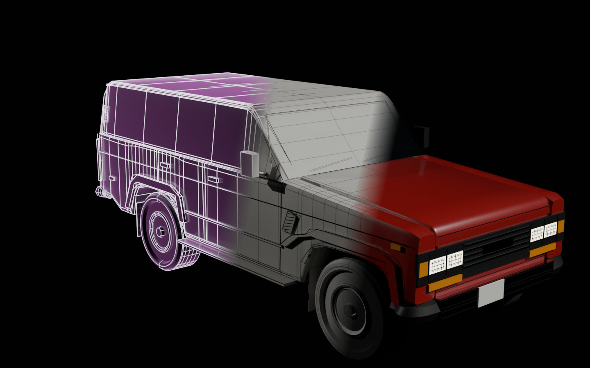
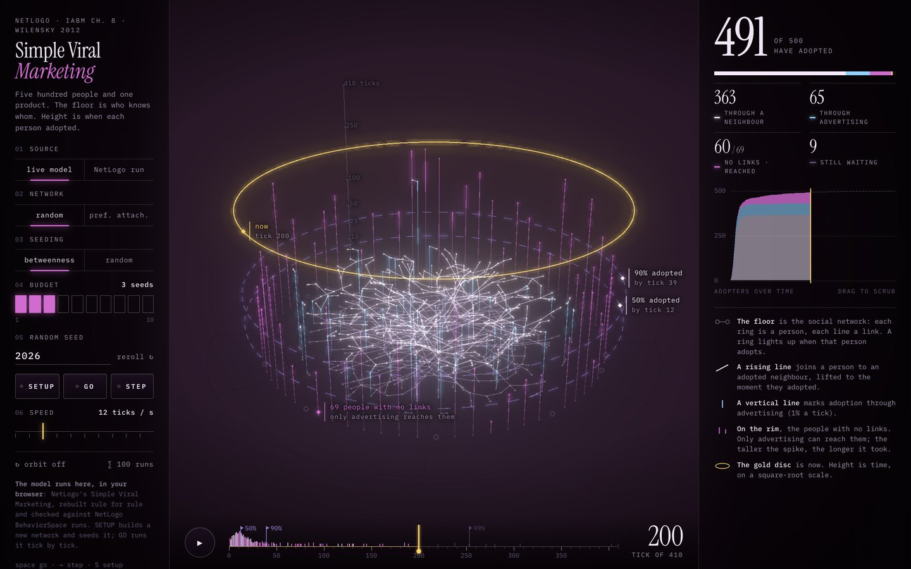
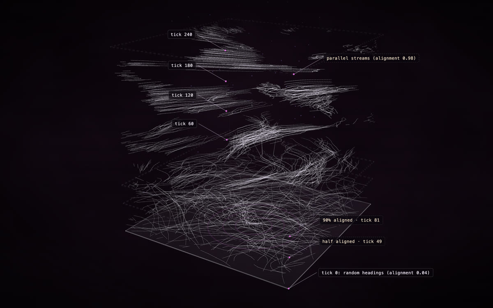
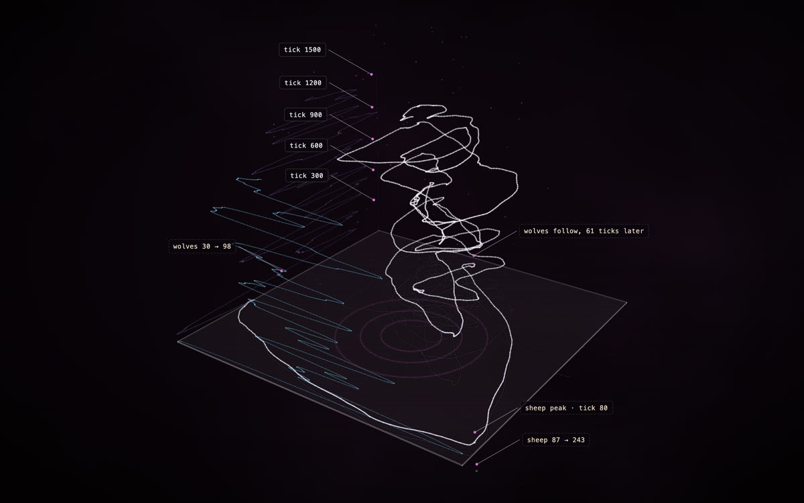
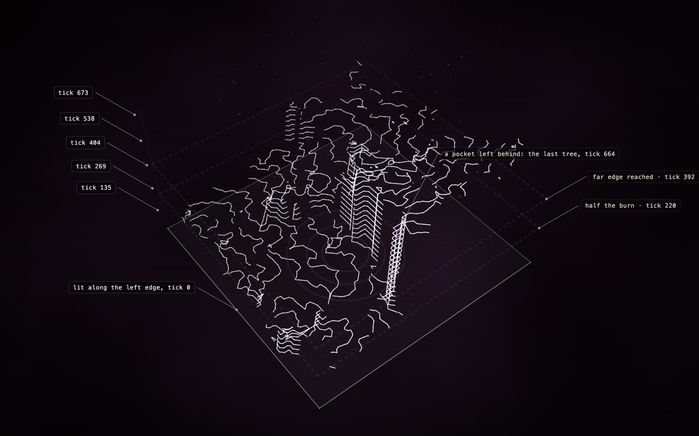

From light to a finished 3D model

Every construct is also a 3D model. What the agent wrote (named parts in metres, joints, the order they assemble in) exports as one glTF file, and a material map finishes it.
- Hologram. Lines of light, as the agent built it.
- Plain model. Every part a solid, named object; joints that open.
- Finished. Paint, chrome, glass, wood: one map per object, kept beside it.
The page shows four gallery constructs as their exported files: the Land Cruiser FJ62, the James Webb Space Telescope, the Revox A77 and the MiniFreak. Slide each from hologram to plain to finished, open its joints, take it apart, and download it.
Exported unedited; the hero is a Blender render of the exported file
Anything you can describe
Each made by an AI agent from a description, in fast or masterpiece mode. Open one to watch it build itself; drag to turn it, R replays the assembly, P shows how each part is known.

Toyota Land Cruiser FJ62
masterpiece · Claude Opus 5.5

Revox A77
fast · DeepSeek V4.1 Flash

Sainte-Chapelle
masterpiece · Claude Opus 5.5

Yamaha CFX
fast · DeepSeek V4.1 Flash

Neuschwanstein
masterpiece · Claude Opus 5.5

Aston Martin DB5
masterpiece · Claude Opus 5.5

Leica M3
fast · GPT-6.1 Sol

Sagrada Família
masterpiece · GPT-6.1 Sol

Duomo di Milano
masterpiece · Claude Opus 5.5

Ferrari F40
masterpiece · GPT-6.1 Sol

Sydney Opera House
masterpiece · GPT-6.1 Sol

Saturn
masterpiece · DeepSeek V4.1 Flash

Andromeda Galaxy (M31)
masterpiece · DeepSeek V4.1 Flash

Patek Philippe 5320G
fast · GPT-6.1 Sol

Jackson Juggernaut ET7
fast · GPT-6.1 Sol

Omega Speedmaster, calibre 321
fast · DeepSeek V4.1 Flash

The Last Light: sea cliff at dusk
fast · GPT-6.1 Sol

Brass orrery
fast · GPT-6.1 Sol

Gothic cathedral nave
fast · GPT-6.1 Sol

Tea house
fast · GPT-6.1 Sol

Arturia MiniFreak
fast · DeepSeek V4.1 Flash
21 constructs · scroll, or use the arrows
Constructs that assemble to music
A construct can assemble across a whole piece of music: the build pauses, surges and flares with it, and you get a video with the music in it. Each opens on its live construct; the film is one click away. Film mode.


Agent-based models, two ways
A NetLogo model can come into Construct as a live simulation you run on the page, or as one recorded run, drawn with time as height.

Simple Viral Marketing (NetLogo)
The model itself runs on the page: rebuilt rule for rule in JavaScript, so you can build new networks, change the settings, run it tick by tick and compare a hundred runs with NetLogo's own, while the construct grows with the run.
Model © 2012 Uri Wilensky · CC BY-NC-SA 3.0
Recorded runs, drawn by the bridge
No simulation runs on these pages. Each is one run, recorded in NetLogo by Construct's bridge and drawn from the recording, so its assembly replays the run; the data comes from the run, never from an AI. An AI art-direction pass adds the labels and milestones on top, and a data lock keeps it off the data. The NetLogo bridge.

Flocking (NetLogo)
Each bird's track rising with time: random flight near the floor, flocks higher up.
Model © 1998 Uri Wilensky · CC BY-NC-SA 3.0 · art direction: Claude Opus 5.5

Wolf Sheep Predation (NetLogo)
The predator-prey cycle rising in time: sheep across, wolves front to back, ticks up.
Model © 1997 Uri Wilensky · CC BY-NC-SA 3.0 · art direction: Claude Opus 5.5

Fire (NetLogo)
The fire's front, every few ticks, raised to its tick as it crosses the forest.
Model © 1997 Uri Wilensky · CC BY-NC-SA 3.0 · art direction: Claude Opus 5.5